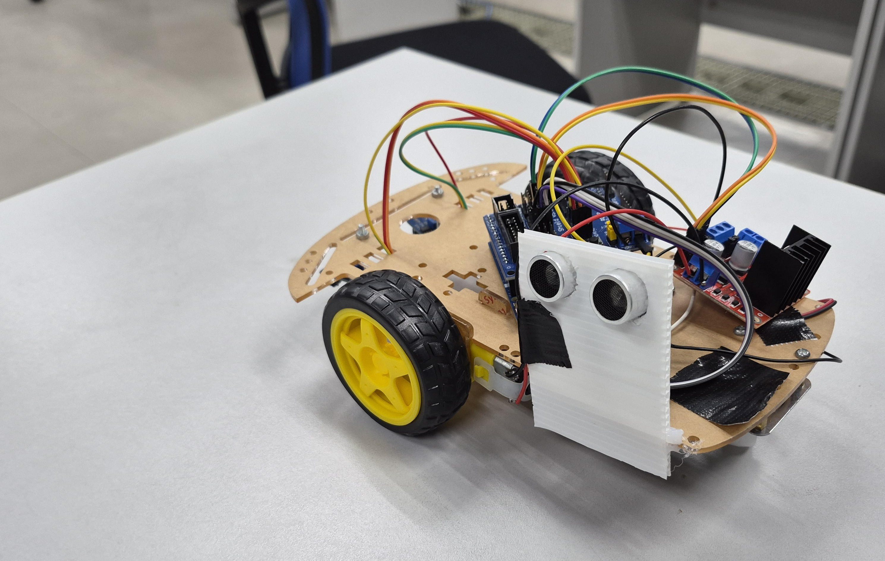

Arduino UNO R4 WiFi
บอร์ดควบคุมและเชื่อมต่อ Wi-Fi
PHYSICAL COMPUTING PROJECT
สำรวจด้วยเซนเซอร์ ส่งข้อมูลผ่าน Wi-Fi
ให้คุณเห็นสถานะของแต่ละช่องจอดได้สะดวกขึ้น

ABSTRACT
ParkerWatcher คือหุ่นยนต์สำรวจช่องจอดรถ โดยใช้ Arduino UNO R4 WiFi เป็นตัวควบคุม รถเคลื่อนที่ตามเส้นด้วยเซนเซอร์ IR และใช้ Ultrasonic HC-SR04 วัดระยะเพื่อประเมินว่าช่องจอดว่างหรือมีรถจอดอยู่ จากนั้นส่งข้อมูลผ่าน Wi-Fi และ MQTT ไปแสดงบนเว็บไซต์ ซึ่งแสดงสถานะของแต่ละช่องและจำนวนช่องจอดที่ว่างได้ โดยออกแบบให้รถหมุนกลับและเริ่มตรวจรอบใหม่ เพื่อช่วยลดความไม่สะดวกในการขับรถวนหาที่จอด
HOW IT WORKS
อ่าน IR และนับจุดเมื่อเซนเซอร์ทั้งสองพบสีดำ
หยุดที่จุด 1–3 เพื่อตรวจช่องจอด A1–A3 ด้วย Ultrasonic
เก็บ array ตาม A1, A2, … แล้วส่งครบทุกช่องผ่าน MQTT
อัปเดตแต่ละช่องและนับจำนวนที่ว่างเฉพาะค่า 0
[1, 0, null]1 = มีรถ · 0 = ว่าง · null = ยังไม่ทราบ
ครบจุดที่ 3 หมุนกลับ ผ่านจุด 4–6 โดยไม่ตรวจหรือส่งผลใหม่ จากนั้นหมุนกลับและเริ่มนับรอบใหม่
-----------
-----------
บอร์ดควบคุมและเชื่อมต่อ Wi-Fi
จำนวน 1 ตัว
เซนเซอร์เดินตามเส้น จำนวน 2 ตัว
วัดระยะเพื่อตรวจสอบช่องจอด
ขับมอเตอร์และควบคุมการเคลื่อนที่
ขับเคลื่อนล้อทั้งสองด้าน
ล้อ แหล่งจ่ายไฟ และสายเชื่อมต่อ
Watcher.ino ด้วย Arduino IDEmqtt-dashboard.com และ Topic parkerwatcher/lot01/slotslink
link
OUR TEAM
68070095
68070120
68070163
68070165

68070188